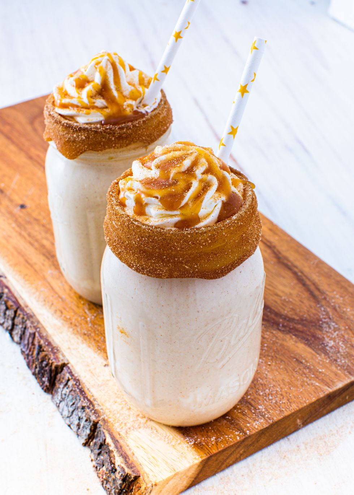

MILK PUNCH
Prep time: 10 mins
Yield: 4
Ingredients
Steps
- In a shallow dish, rim two glasses with caramel and cinnamon sugar and set aside.
- In a blender, combine ice cream, bourbon, vanilla, honey, and cinnamon and blend until smooth. Pour mixture into glasses and garnish with whipped cream and ground cinnamon.